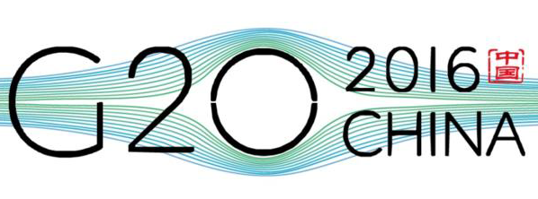
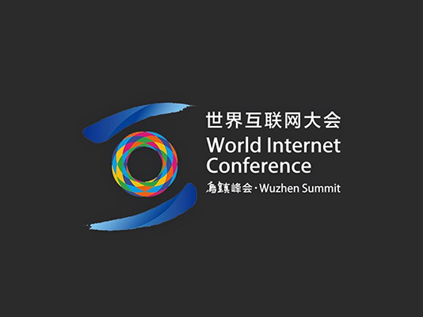
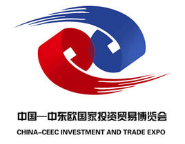

首页
浙史
新闻
联系
“浙”·小新闻
news
2016年9月4日
2015年2月，杭州成功获得2016年G20峰会举办权。2015年11月16日，国家主席习近平出席土耳其G20峰会并发表讲话，宣布中国于2016年9月4日-5日在杭州举办二十国集团领导人第十一次峰会。
G20作为全球经济合作主要平台，对中国来说，是一个机遇。中国是最大的发展中国家，是新兴市场国家的代表，举办G20峰会中国可以代表发展中国家发声，借助“一带一路”、亚投行等与更多国家良性互动，实现与其他国家的共赢。国际峰会落户杭州将拉动当地基础设施建设，促进当地外向型经济和国际化水平。

2014年11月19日至21日
世界互联网大会在中国浙江乌镇举办。这是中国举办的规模最大、层次最高的互联网大会，也是世界互联网领域的高峰会议。本次大会由中华人民共和国国家互联网信息办公室和浙江省人民政府共同主办。
 
中国—中东欧国家投资贸易博览会由中国商务部和浙江省人民政府共同主办，由商务部相关司局、宁波市人民政府、浙江省商务厅共同承办，是中国与中东欧国家首个以投资贸易为主题的综合性博览会。每年6月在著名的港口城市宁波举办。
1987年2月3日